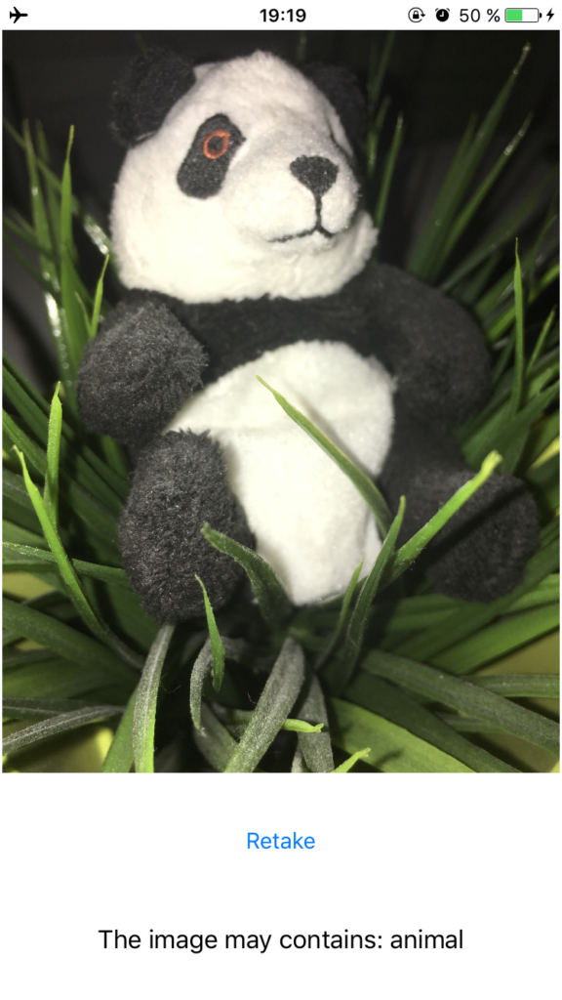

Auf der diesjährigen BUILD stellte Microsoft eine Vielzahl an neuen und recht interessanten APIs auf Grundlage von künstlicher Intelligenz vor. Die Insider mögen Gnade walten lassen bei dieser Formulierung. Generell ist ja das 2016ner “Ich bau eine Twitter-App” eine App die Bilder erkennen kann.
Aus diesem Grund habe ich eine kleine und rein für Testzwecke gebaute swiftige Demo gebaut, die ein aufgenommenes Bild Richtung Redmond schickt und mir im besten Falle die erkannten Tags aka Objekte zurück liefert.
Generell ist dies hier nicht wirklich eine spezielle iOS Sache. Es handelt sich bei der Kommunikation mit den Microsoft Cognitive Services um bequeme und plattformübergreifend auf http-Anfragen und JSON-basierenden Antworten.
Den Quelltext zur Demo findet ihr hier auf Github. Für das “Original” als auch weitere, spaßige Ideen was man mit CV bauen kann findet ihr die Demos im Repository von Alex Repty.
Pädagogisch wertvolle Erklärungen was die Cogntive Services eigentlich sind und wie man diese nutzt findet man im entsprechenden, deutschsprachigen Kurs in der MVA. Auch udemy hat einen entsprechenden Kurs für 35 Euro im Angebot.
Damit die Demo läuft, braucht man einen API Key von Microsoft. Diesen gibt es mit fairen Quotas als Probevariante gratis auf der Produktseite von Microsoft. Den Schlüssel muss noch als Wert der entsprechenden Konstanten in der
// CognitiveServiceConfiguration.swift
static let ApiKey = ""
-Datei gesetzt werden.
Im selbigen File findet man noch den Konfigurationswert:
static let RequiredConfidence
Dieser gibt in einer Spanne von 0…1 an, wie sicher sich die KI sein muss bevor sie ein Objekt als erkannt ansieht. Zwischen 0.75 und 0.9 fuhr ich am besten.
[
Die Erkennung von einfachen Dingen ist meist nicht so ausführlich wie ich gehofft habe. Im angehängten Screenshot hätte ich beispielsweise noch Tags wie “panda”, “green” oder “leave” erwartet. Ob dies an einer fehlenden Konfiguration meinerseits des Requests liegt oder am Service an sich kann ich jedoch noch nicht sagen. Ansonsten funktionieren Bilder von Gesichtern besser. Hierbei werden neben Geschlecht auch ob die Person eine Brille trägt und vereinzelt wohl auch, welche ethnische Zugehörigkeit diese Person hat.
Ansonsten gab es noch ein offensichtliches Learning für mich. Es ist eine sehr ungute Idee ein 1:1 Bild der iPhone Kamera im mobilen Internet Richtung Redmond zu schicken. Hierdurch dauerte ein Request bis zu 20 Sekunden. Mit Auflösungen von 250 bis 500 Pixeln ging alles nahezu instantan. Selbst mit so kleinen Auflösungen konnte ich keine Einbusen in der Objekterkennung bemerken.
Wer nun Interesse an dieser Thematik gewonnen hat, dem kann ich auf Twitter neben dem sehr netten iOS- und Mac-Entwickler Alex Repty (@arepty) auch die, im deutschsprachigen Twitter-Universum bekannten, @codeprincess, ihrerseits Technical Evangelist bei Microsoft, empfehlen. Folgen lohnt so oder so. üôÇ
Natürlich laden auch andere APIs der Cogntive Services zum experimentieren ein. Eine Übersicht welche Funktionen existierenden findet man auf der relativ übersichtlichen Produktseite von Microsoft.
Back